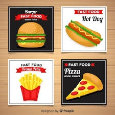
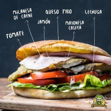
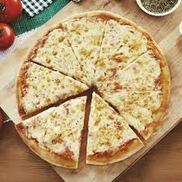
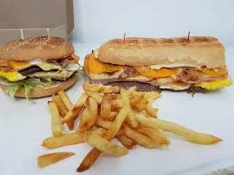
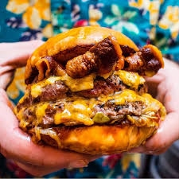
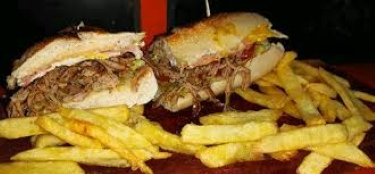

Descubre nuestros deliciosos platos y disfruta de una experiencia única.
Food Truck Don Santino se dedica a ofrecer los mejores y deliciosos sándwiches de milanesas, lomitos , hamburguesas, matambres, pizzas y empanadas.Si estas en busca de una experiencia culinaria sabrosa y rápida, este Food Truck es una excelente opción.
     